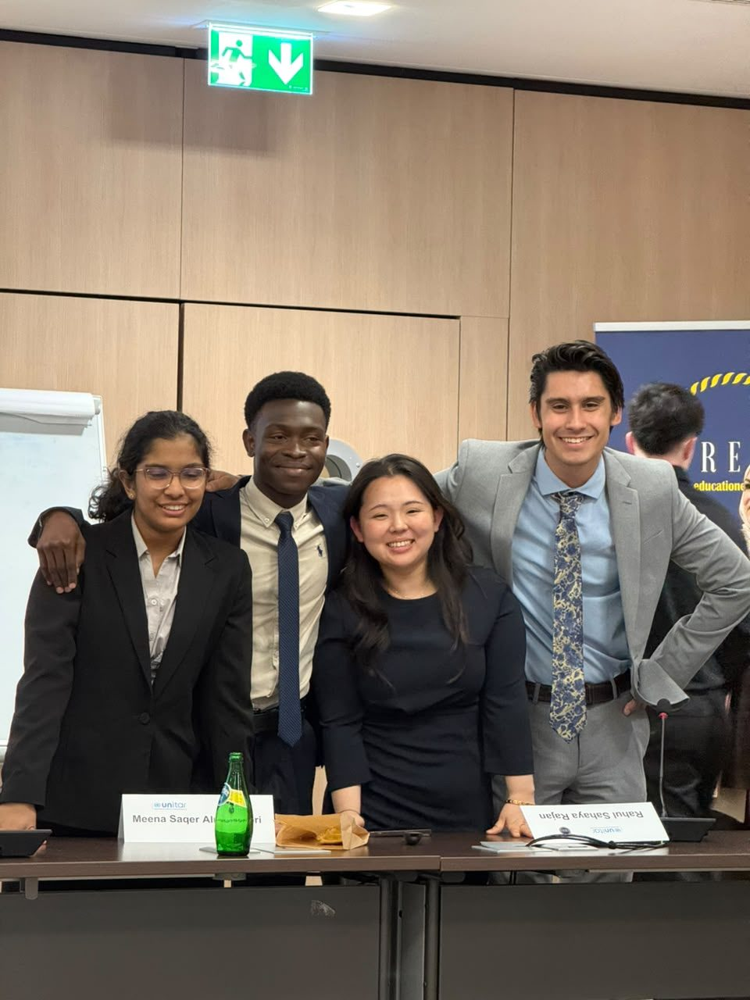
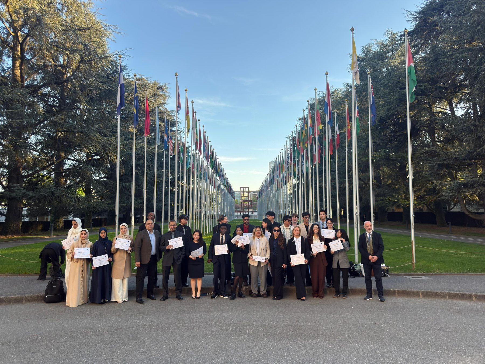

Executive summary
In rural Bihar, a child from a household below the poverty line is worth more as labour than as a student — which makes dropping out the rational choice, and keeps caste-based exclusion economically self-reinforcing. The Bihar Integrated Mobility Initiative (BIMI) prices that trade-off directly: it pays a household exactly the local market rate for the child's labour, converting the student from a labour asset back into a human-capital asset, and funds the whole programme by reclaiming the value chain of Bihar's artisanal exports instead of relying on aid. Presented at the Palais des Nations in Geneva, the case took first place.
Why it is a quantitative problem
The policy idea is the easy half. The hard half is proving that the intervention survives contact with a volatile world — monsoon failure, health crises, inflation — and that the funding mechanism closes without external money. That is a modelling problem, and it is where my contribution sat.
Education data in Bihar shows a sharp discontinuity at the fifth grade: the point where the opportunity cost of schooling exceeds the family's perceived value of it. We treated that threshold as the intervention point, and the whole model as a question about the return on a twelve-year human-capital investment made under uncertainty.
Methodology
- Identification strategy. A multivariate OLS model of educational attainment on stipend receipt, with household controls, individual characteristics and district-level fixed effects to absorb unobserved time-invariant heterogeneity such as local infrastructure.
- Endogeneity. Stipend receipt correlates with unobserved parental motivation, which would bias the estimate. We instrumented it with distance to the nearest artisan cooperative centre, isolating a genuine liquidity effect rather than a motivation effect.
- Monte Carlo simulation. Dropout modelled not as a single event but as a repeated Bernoulli trial over twelve years, with the retention probability a function of the baseline dropout rate, the variance of local economic shocks, and the stipend. Ten thousand iterations of a student's path give the distribution of outcomes rather than an average.
- Tail analysis. Reporting the worst-case decile explicitly — years of extreme drought or high inflation — because a development programme that only works in the median scenario is not a programme.
- Funding model. Unit-economics of an artisanal export cooperative that bypasses local middlemen, with a fixed allocation of international retail value, plus a sensitivity analysis on the artisan-to-student funding ratio to locate the break-even point.
- Incentive design. A second stage that switches the programme from subsidy to competitive meritocracy at grade twelve, so support is decoupled from academic reward and the outcome is defensible against the "degradation of merit" objection.
Retention across the twelve-year path
The interactive chart could not be loaded (the Plotly CDN is unreachable). The full analysis is available in the PDF write-up.
Source: BIMI write-up. The gap opens at the fifth-grade threshold, where labour-market entry begins.
Where the money goes
The cooperative's allocation is what makes the programme self-financing: a quarter of every international sale is earmarked for the education trust, while the artisan still receives roughly four times what the traditional middleman-trader pays.
The interactive chart could not be loaded (the Plotly CDN is unreachable). The full analysis is available in the PDF write-up.
Source: BIMI write-up. Allocation per unit of international retail value.
Results
- Graduation probability rises from 14.4% to 69.1%. Under current conditions only 14.4% of students in the lowest decile reach a bachelor's degree; with the economic pressure of labour removed, 69.1% do.
- The result holds in the tail. Even in the worst-case decile of simulations, graduation stays above 58%, against a baseline that collapses below 4% — the finding that made the case defensible to an audience of policy auditors.
- The programme funds itself within seven years, with roughly 0.82 participating artisans sufficient to fund one student's stipend.
- Seventy per cent of international retail value stays in the village, against 5–10% under traditional development models.
Geneva
The programme brought together an international cohort at the Palais des Nations in April 2025. Our team of four — from four different countries — built, defended and presented the case, and was placed first for the presentation.
-

The team after the final presentation
-
Receiving the certificate
-

The cohort at the Allée des Nations